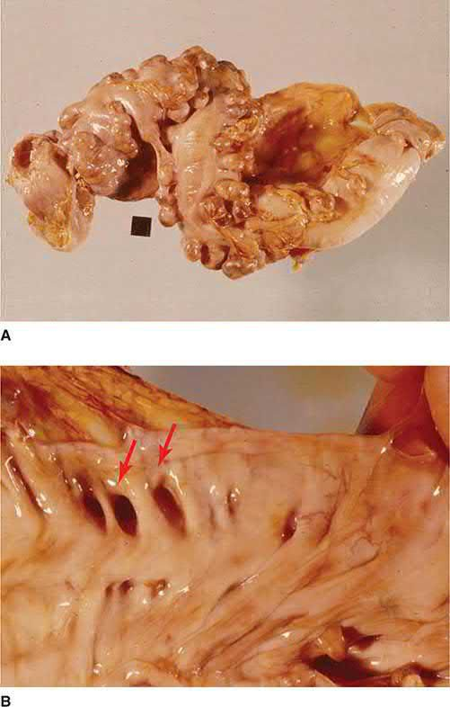
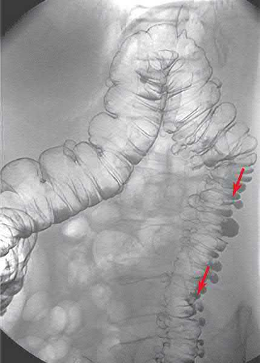
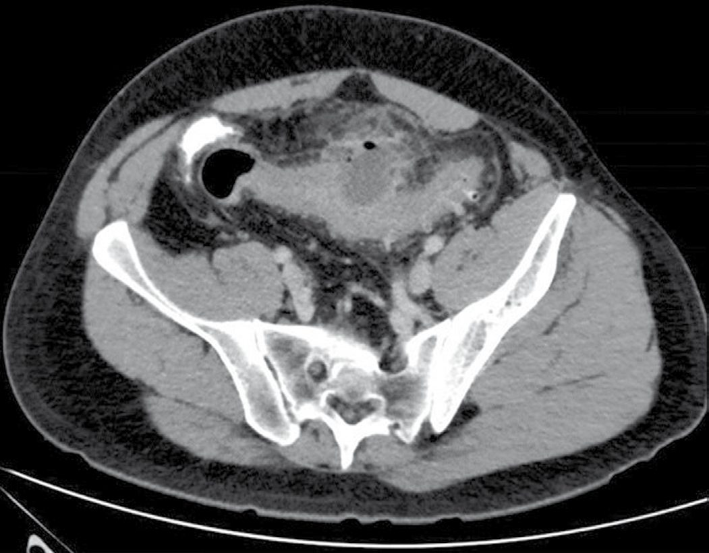
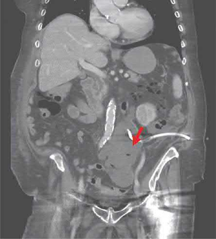

Diverticular Disease
Summary
- Colonic diverticula are acquired outpouchings of mucosa and connective tissue through the colonic wall, found in around 75% of people over 70 in the Western world, overwhelmingly in the sigmoid colon [1][2].
- Most diverticular disease is asymptomatic (diverticulosis), but 10–30% develop symptomatic complications ranging from painful diverticular disease to diverticulitis, abscess, perforation, fistula, stricture and haemorrhage [1].
- Management is chiefly medical, with surgery reserved for complications or recurrent/refractory disease [1][2].
Definition
Diverticula are hollow outpouchings of the gastrointestinal tract. Congenital diverticula (e.g. Meckel's) contain all three coats of the bowel wall; acquired diverticula, as in sigmoid diverticular disease, lack a muscularis layer [1].
Pathophysiology
- Diverticula form along the lines where penetrating colonic arteries traverse the colonic wall between the taeniae coli, associated with hypertrophy of the surrounding colonic muscle and mucosal thickening, probably driven by high-pressure colonic contractions causing chronic wall pressure [2].
- Epidemiological evidence links the disease to a refined, fibre-deficient Western diet: altered collagen structure with ageing, disordered motility and raised intraluminal pressure (especially in the narrow sigmoid colon) cause mucosal herniation at vessel-penetration points; the rectum, with a complete muscular coat and wider lumen, is rarely affected.
- Diverticular disease is rare in Africa and Asia, where dietary fibre intake is high (Burkitt) [1].
- Diverticulitis represents acute neutrophilic infiltration around an inflamed diverticulum and in the subserosal tissues [2].

Clinical features
Most diverticular disease is asymptomatic and found incidentally [1]. Recognised presentations include [1][2]:
- Painful diverticular disease: intermittent left iliac fossa (LIF) pain, distension, flatulence and a sensation of heaviness, which may overlap with irritable bowel syndrome.
- Acute diverticulitis: persistent LIF pain (occasionally right-sided if a redundant sigmoid loop lies across the midline), fever, tachycardia and localised tenderness or a tender mass; diarrhoea or constipation may accompany it.
- Haemorrhage: typically painless, sudden and profuse, with large-volume dark red or clotted blood (bright red from the sigmoid, darker from the right colon), due to rupture of a peridiverticular submucosal vessel, usually without inflammation.
- Complications: pericolic/paracolic abscess (swinging fever, tender LIF mass), purulent or faeculent peritonitis from perforation, colovesical fistula (recurrent UTI, pneumaturia) or colovaginal fistula (faeculent vaginal discharge, more common after hysterectomy), and stricture (recurrent colicky pain, distension, bloating from chronic fibrosis).
Etiology
Low dietary fibre intake in Westernised populations is the principal implicated factor, combined with age-related collagen change, colonic dysmotility and raised intraluminal pressure [1]. Right-sided diverticular disease predominates in South East Asia [1].
Diagnosis
- Elective diagnosis is usually by colonoscopy, though this incompletely assesses the number and extent of diverticula and carries perforation risk in a narrowed segment [1].
- Contrast-enhanced CT is the investigation of choice in the acute setting, with excellent sensitivity and specificity for bowel-wall thickening, abscess and extraluminal disease, and is used to guide percutaneous abscess drainage [1][4].
- Endoscopy and contrast studies are generally deferred for six weeks after an acute attack to reduce perforation risk, then used to exclude coexisting carcinoma [1][4].
- Hb, WCC and CRP are checked during acute episodes [1].

Scoring and Severity
The Hinchey classification grades the severity of complicated diverticulitis/peritoneal contamination and guides management: Grade I (mesenteric/pericolic abscess; Grade II) pelvic (walled-off) abscess; Grade III (purulent peritonitis; Grade IV) faecal peritonitis [1][4]. Mortality is markedly higher with perforation than with an inflammatory mass alone (33% versus 3%) [1].

Treatment and Management
- Medical: a high-fibre diet, bulk-forming laxatives and stool softeners are commonly recommended, though evidence for effectiveness is limited; antispasmodics may help recurrent pain [1].
- Uncomplicated diverticulitis confirmed on CT in an immunocompetent patient without systemic infection may not require antibiotics, as it may be self-limiting; complicated disease with a localised abscess is treated with intravenous antibiotics and image-guided percutaneous drainage [1][6].
- In the Oxford Handbook emergency protocol, uncomplicated diverticulitis is treated with a low-residue diet, high fluid intake and stool softeners for two weeks, with IV antibiotics (e.g. co-amoxiclav ± gentamicin) reserved for infective exacerbations [4].
- Recurrent infective episodes may be reduced by cyclical antibiotics and probiotics [2].
- Most patients (50–70%) recover from an episode of uncomplicated diverticulitis without further attacks, and the traditional practice of offering elective resection after a second episode has been increasingly questioned, as recurrence does not clearly increase complication risk [1][6].
Surgeries
- Emergency laparotomy: for generalised peritonitis or failure to respond to optimum medical therapy; carries substantial risk (mortality ~15% overall, approaching 50% with faecal peritonitis) [1].
- Hartmann's procedure: sigmoid resection with formation of a left iliac fossa end-colostomy and closure/oversewing of the rectal stump; often the safest option with significant contamination or an unstable patient, with a second-stage reversal planned later [1][2].
- Resection with primary anastomosis (± defunctioning loop ileostomy): considered selectively in a young, fit patient with limited contamination; evidence suggests outcomes are better than simple defunctioning stoma without resection [1].
- Laparoscopic lavage: in selected, stable, expert-hands cases (Hinchey 2–3) without gross faecal contamination or visible perforation; remains controversial [1][4].
- Elective sigmoid colectomy: considered for recurrent attacks, symptoms affecting quality of life, stricture, or fistula; laparoscopic approach favoured where feasible [1]. For colovesical fistula, once malignancy is excluded, the sigmoid is resected off the bladder with catheter drainage for 7–10 days, sometimes with an omental interposition flap; ureteric stents may aid safe dissection [1].
- Percutaneous drainage: for stable patients with a localised abscess (Hinchey I–II), avoiding laparotomy [1].

Complications
Diverticulitis, pericolic/paracolic abscess, purulent or faeculent peritonitis, intestinal obstruction, haemorrhage and fistula formation (colovesical, colovaginal, colocutaneous, or rarely to the retroperitoneum causing a psoas abscess) are recognised complications of diverticular disease [1].
Prognosis
Most diverticulosis remains asymptomatic lifelong. After a first episode of diverticulitis, roughly 25% of patients under 50 will have a further episode, but 75% will not, and the complication rate after elective surgery is low; the risk of complications does not clearly increase with recurrent attacks, which has shifted practice toward more conservative, individualised management [1][6].
References
- Bailey & Love's Short Practice of Surgery, 28th ed., Ch. 77 The large intestine
- Oxford Handbook of Clinical Surgery, 5th ed., Ch. 12 Colorectal surgery
- Maingot's Abdominal Operations, 13th ed., Ch. 43
- Oxford Handbook of Clinical Surgery, 5th ed., Ch. 26
- Sabiston Textbook of Surgery, 22nd ed., Ch. 95
- Schwartz's Principles of Surgery: ABSITE and Board Review, Ch. 29